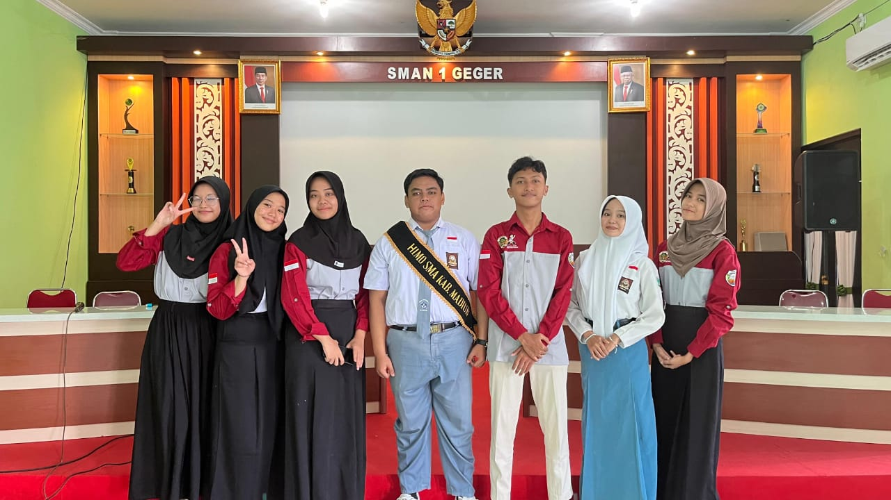
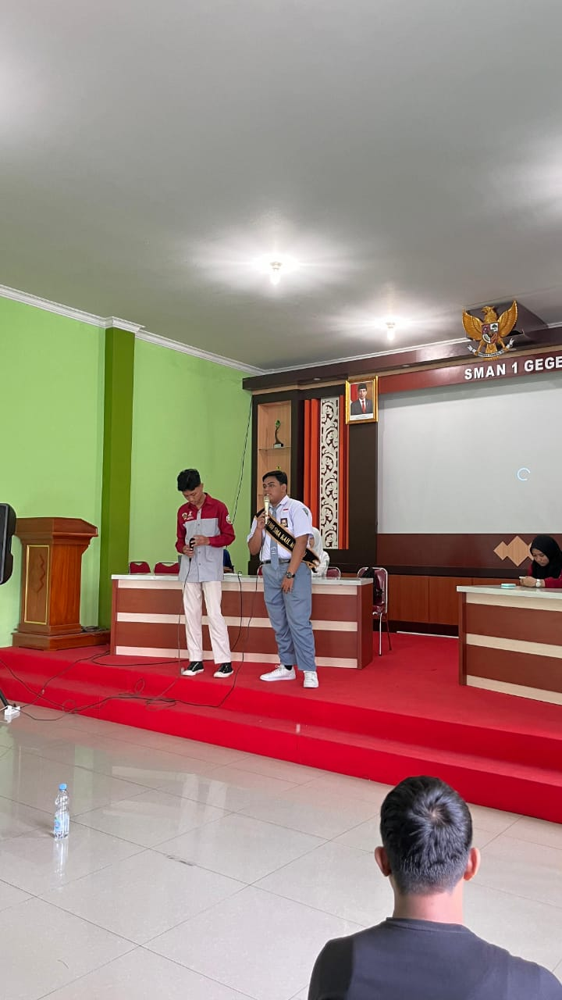

HIMO merupakan singkatan dari Himpunan Musyawarah OSIS. HIMO didirikan oleh Dinas Pendidikan Provinsi Jawa Timur melalui Bidang PPSMA Provinsi Jawa Timur. Pengurus dari HIMO sendiri adalah hanya SMA saja dan beranggotakan perkumpulan Ketua OSIS SMA Negeri dan Swasta seluruh Provinsi Jawa Timur.
HIMO Jawa Timur didirikan di Kota Surabaya pada Tahun 2020 dan dilantik secara langsung oleh Kepala Dinas Pendidikan Provinsi Jawa Timur. Tetapi sebelum berganti nama menjadi Himpunan Musyawarah OSIS, organisasi ini diberi nama Musyawarah Kerja Ketua OSIS (MKKO) yang didirikan pada tahun 2019, perubahan ini didasarkan nama MKKO dianggap hanya organisasi yang mencangkup ketua OSIS, sedangkan perkumpulan ini adalah satu komponen yang didasari oleh OSIS wilayah Jawa Timur . HIMO tidak dibentuk dipusat saja tetapi juga dibentuk di seluruh Kabupaten dan Kota se-Jawa Timur.
HIMO
HIMO
Kabupaten Madiun
HIMO Kabupaten Madiun adalah bagian dari organisasi HIMO SMA Jawa Timur yang terletak pada Bakorwil 1. HIMO Kabupaten Madiun berdiri sejak tahun 2019 namun secara kepengurusan resmi baru berdiri di tahun 2023/2024, secara resmi sekarang baru mencaoaci generasi kedua. HIMO Kabupaten Madiun terdiri dari 33 orang anggota dari 10 SMAN dan 1 SMAS se Kabupaten Madiun.
Rapat rutin pengurus Himo Kabupaten Madiun diselenggarakan rutin baik secara offline maupun online melalui video conference. Agenda utama rapat meliputi evaluasi kinerja bulan lalu, pembahasan rencana program kerja yang akan datang. Rapat ini diharapkan mampu memperkuat koordinasi internal dan mempercepat realisasi program kerja yang direncanakan.

Documentation 1

Documentation 2
Documentation 3
2. Kerja Sama Pengisian dan Penyampaian Suara Anak Kabupaten
Madiun
Forum Anak Kabupaten Madiun akan melaksanakan kegiatan
Penyampaian Suara Anak melalui pengisian SAMARA "Saatnya
Anak Madiun Bersuara". Kegiatan ini akan disosialisasikan
melalui perwakilan Ketua OSIS Se-Kabupaten Madiun yang
dinaungi oleh Organisasi HIMO. Kemudian link akan di isi
oleh seluruh siswa/i SMA di Kabupaten Madiun dengan minimal
responden 250 anak. Bukti dari pengisian akan dikumpulkan
melalui Google Drive yang sudah disediakan panitia serta
media sosial masing-masing sekolah.
HIMO CLEAN UP DAY adalah sebuah kegiatan untuk membersihkan
pantai, sungai dan lingkungan sekitar dari sampah yang
menumpuk, untuk sedikit mengurangi jumlah sampah yang ada di
tempat tersebut. Bertepatan dengan Hari Lingkungan Hidup
Himo Kabupaten Madiun mengadakan clean up day di sungai
daerah Bangun Gunungsari Kabupaten Madiun. Kondisi sungai
yang kotor mengakibatkan berbagai masalah seperti meluapnya
air karena aliran yang tidak lancar, dengan adanya kegiatan
clean up disungai ini diharapkan dapat mengurangi dampak
akibat banyaknya sampah
Pesona Ramadan merupakan kegiatan yang diselenggarakan oleh
HIMO Jawa Timur. Kegiatan ini berisi tentang berbagai lomba
menarik yang dapat diikuti oleh Kabupaten dan Kota di Jawa
Timur. Pada ramadan tahun ini, terdapat lomba tartil dan
lomba membuat poster digital. HIMO Kabupaten Madiun juga
turut berpartisipasi dalam acara ini.
Reorganisasi HIMO SMA Kab. Madiun 2024 diikuti oleh 10 SMAN dan 1 SMAS se Kab. Madiun, dilaksanakan selama 2 hari yakni pada 15-17 Januari 2024 di SMAN 1 Mejayan Kabupaten Madiun. Pada kegiatan Reorganisasi HIMO SMA Kabupaten Madiun ini akan membentuk kepengurusan dari perwakilan SMAN/SMAS se Kabupaten Madiun. Dalam acara reorgansiasi ini terdiri dari beberapa rangkaian antara lain pengisian portofolio dan tahap wawancara, nantinya hasil dari pengisian portofolio dan wawancara akan menentukan kepengurusan baru HIMO SMA Kabupaten Madiun. Pada acara Reorganisasi ini dipilih pula Ketua Umum HIMO SMA Kab. Madiun dan Delegasi Kabupaten Madiun untuk menjadi pengurus HIMO JATIM dalam kepengurusan HIMO 2024/2025
Oimpiade Matematika, IPA, dan Bahasa Inggris atau biasa
dikenal dengan “LIMITS” merupakan salah satu program kerja
OSIS SMAN 1 Geger Seksi Bidang Prestasi Akademik, Seni dan
Olahraga. Pada tahun 2024 dilaksanakan hari ini, Minggu 18
Februari 2024. Pada tahun 2024 Limits mengambil tema “Exude
Your Confident, Be Proud of Yourself, and Break Your
Limits”. Para pemenang akan mendapatkan hadiah uang tunai
dan Golden Ticket untuk masuk di SMAN 1 Geger. Pengurus HIMO
SMA Kab. Madiun juga diundang untuk menghadiri kegiatan
Limits. Diharapkan dengan hadirnya Pengurus HIMO dapat
mengenalkan Organisasi HIMO pada peserta olimpiade serta
menjadi ajang silaturahmi pada pengurus HIMO SMA Kab.
Madiun.